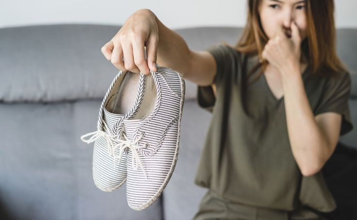
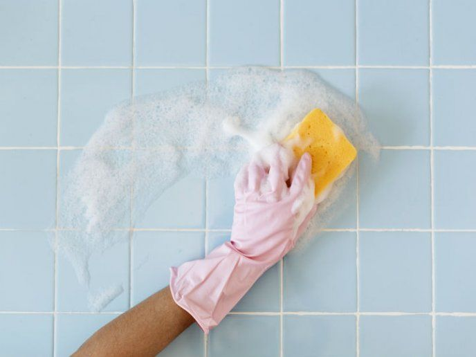
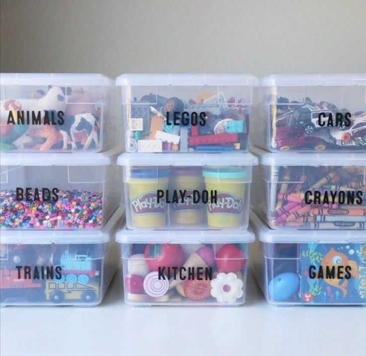
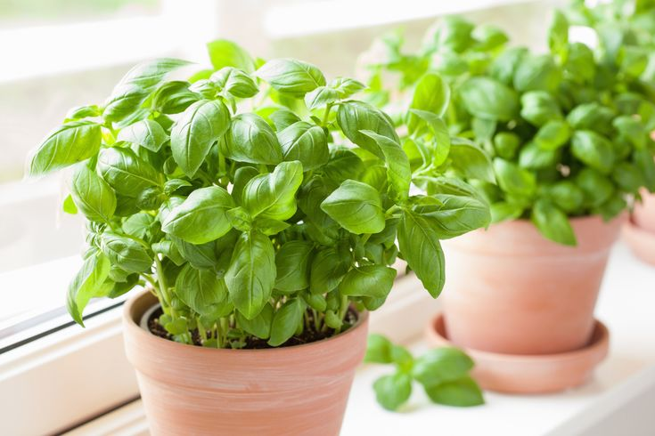

Consejos para el hogar

Elimina malos olores
Materiales:
- 1 taza de bicarbonato de sodio por recipiente.
- Recipientes pequeños o bolsitas de tela transpirable.
Pasos:
- Llena recipientes o bolsitas con bicarbonato de sodio.
- Colócalos en lugares como el refrigerador, armarios, o cerca de zapatos.
- Reemplaza el bicarbonato cada 1-2 meses.
¡Adios malos olores!

Limpiador casero
Materiales:
- 1 taza de vinagre blanco
- 1 taza de agua
- Cáscaras de 2 limones
- Un pulverizador
Pasos:
- Mezcla el vinagre blanco y el agua en el pulverizador.
- Agrega las cáscaras de limón.
- Deja reposar 24 horas antes de usar.
- Úsalo para limpiar superficies de cocina, baños o vidrios.
¡Lo mejor!

Organización con cajas
Materiales:
- Cajas o contenedores transparentes
- Etiquetas adhesivas o de papel
- Un marcador permanente
Pasos:
- Clasifica tus objetos por categoría (ropa, herramientas, etc.).
- Coloca los objetos en cajas transparentes para facilitar la visibilidad.
- Escribe el contenido en las etiquetas y pégalas en cada caja.
¡Lindo!

Ahuyenta insectos
Materiales:
- Albahaca
- Romero
- Menta
- Lavanda
- Macetas o recipientes pequeños con tierra
Pasos:
- Compra o planta estas hierbas aromáticas en macetas
- Colócalas en ventanas, puertas, o en la cocina.
- Riégalas regularmente y disfruta de un hogar fresco y libre de insectos.
¡Fuera bichos!